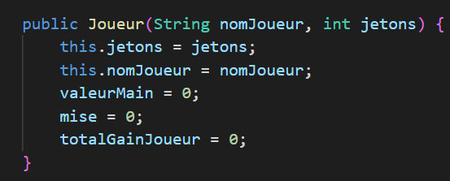
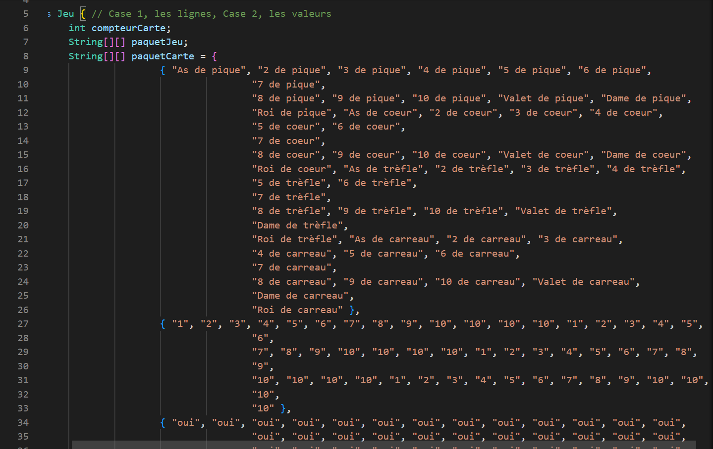
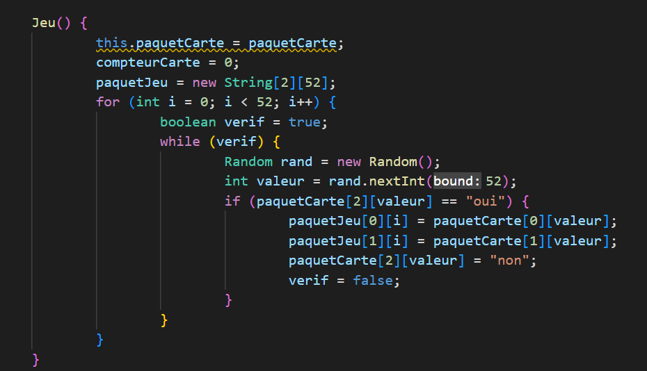

Mon jeu de blackJack
Résumé
Afin d'user de mon temps libre et de mon expérience acquise lors des cours et des apprentissages sur internet, j'ai codé un petit jeu qui permet de jouer au BlackJack comme dans un casino via l'interface de commande de Visual Studio Code. Le code employé dans le programme est authentique (c'est à dire que rien a été récupéré sur internet).
Fonctionnement du jeu
Au début le programme nous demande de sélectionner un nombre de jetons. Ce nombre sera sa réserve depuis laquelle il pourra miser. Ensuite le joueur doit choisir un nombre de jetons à miser pour la partie (valeur comprise entre 1 et 200). Enfin la partie commence et le jeu décrit les cartes piochées par le joueur et il a le choix de continuer à piocher ou s'arrêter. Lorsqu'il décide de s'arrêter, le croupier virtuel pioche des cartes et termine son tour. Les valeurs des jeux du joueur et du croupier sont énoncées puis comparées pour déterminer le gagnant. Si le joueur gagne il gagne le double de sa mise. S'il réalise une égalité avec le croupier il la récupère. Si le joueur perd, il ne récupère aucun jeton. Le programme demande ensuite s'il souhaite rejouer une partie et le programme s'arrête lorsque le joueur répond "non"
Les objets et leurs constructeurs
Pour réaliser ce programme il m'a fallu créer deux types d'objets différents:
- - Le joueur
- - Le jeu de cartes
Le joueur est l'objet permettant d'acquérir toutes les informations du joueur tels que son nombre de jetons, le nombre de jetons misé, la valeur de sa main, le calcul de ses gains (positifs ou négatifs),... L'objet joueur est le même utilisé pour prendre en compte le jeu du croupier, à l'exception que les valeurs de mises et de gains ne sont pas utilisés.
Le constructeur des objets "Joueur":
Le jeu de cartes lui ne doit retenir qu'un compteur et un tableau de valeur pour recenser les cartes du paquet. Le constructeur réalise donc un nouvel objet "paquetcarte" à chaque nouvelle partie en s'appuyant sur un tableau de valeurs contenant toutes les cartes et leurs valeurs. Ils se charge ainsi de réaliser le même tableau de valeurs mais en changeant de manière aléatoire l'ordre des cartes. Ainsi pour piocher, le joueur et le croupier prennent les cartes dans l'objet dans l'odre dans lequel les cartes ont été mises, augmentant de 1 le compteur pour passer à la prochaine carte du paquet après chaque pioche.
Le tableau de valeurs des cartes:
Le constructeur du paquet de cartes:
